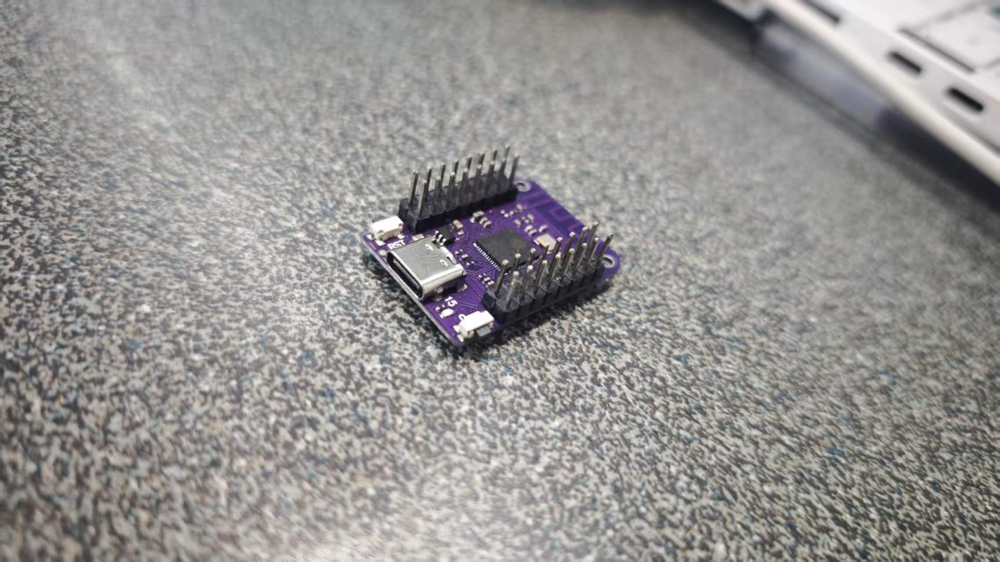
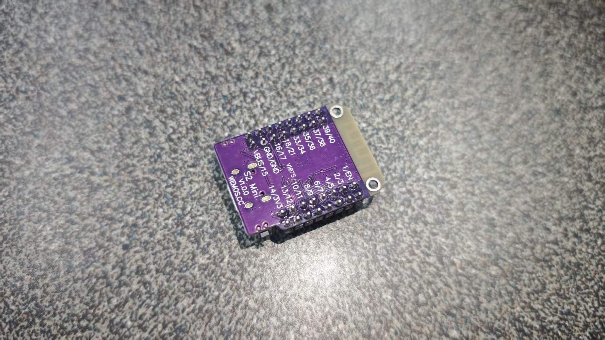
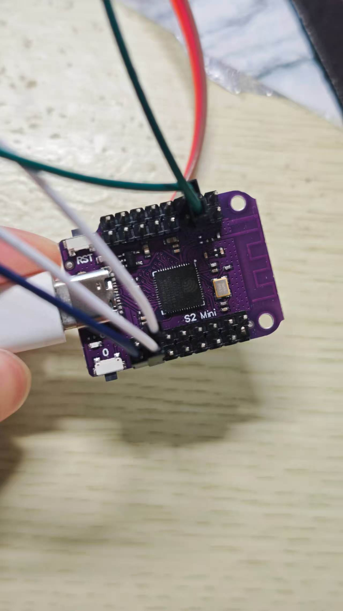
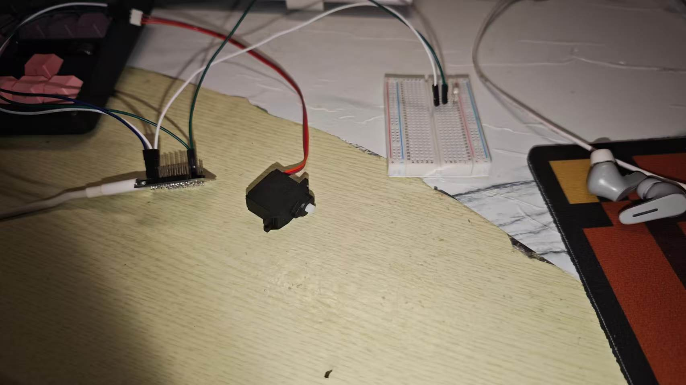

基于Arduino框架与ESP32 S2 Mini开发板的嵌入式开发全记录，包含环境搭建、基础代码与课程项目实践
本次课程使用的开发板为 ESP32 S2 Mini，这是一款基于ESP32-S2芯片的迷你型开发板，体积小巧、功能强大，非常适合物联网与嵌入式项目开发。
| 参数项 | 具体规格 |
|---|---|
| 主控芯片 | ESP32-S2FN4R2 (单核32-bit Xtensa LX7，主频240MHz) |
| 内存 | 320KB SRAM，4MB Flash，2MB PSRAM |
| 无线功能 | Wi-Fi 2.4 GHz (802.11 b/g/n) |
| IO引脚 | 27个可编程GPIO引脚，支持ADC/DAC/I2C/SPI/UART |
| USB接口 | Native USB OTG，支持USB CDC串口通信与程序烧录 |


课程使用 Arduino IDE 作为开发环境，通过Arduino框架进行ESP32 S2 Mini的程序开发，环境搭建步骤如下：
https://dl.espressif.com/dl/package_esp32_index.json；💡 提示：如果电脑无法识别开发板，需检查USB线是否为数据线（仅充电线无法通信），并安装CP210x或CH340串口驱动（根据开发板的USB转串口芯片选择）。
这是ESP32 S2 Mini的经典入门代码，控制板载LED（或外接LED）周期性闪烁，理解GPIO输出的基本使用方法。
// 定义LED引脚
const int ledPin = 15;
// setup()函数仅在启动时运行一次
void setup() {
// 初始化串口通信，波特率115200
Serial.begin(115200);
// 等待串口连接（可选，用于USB CDC串口）
while (!Serial) {
delay(10);
}
// 将LED引脚设置为输出模式
pinMode(ledPin, OUTPUT);
Serial.println("ESP32 S2 Mini LED闪烁程序已启动！");
}
// loop()函数会循环反复运行
void loop() {
digitalWrite(ledPin, HIGH); // 点亮LED（输出高电平）
Serial.println("LED 已点亮");
delay(1000); // 延时1000毫秒（1秒）
digitalWrite(ledPin, LOW); // 熄灭LED（输出低电平）
Serial.println("LED 已熄灭");
delay(1000); // 再延时1秒
}结合你的Gitee仓库中的week6-LED&sg90项目，实现LED亮度控制与SG90舵机角度控制的综合应用。


项目功能说明：
Serial.print()）输出调试信息，这是排查代码问题最有效的方法；注意串口监视器的波特率需与代码中Serial.begin()设置的一致。